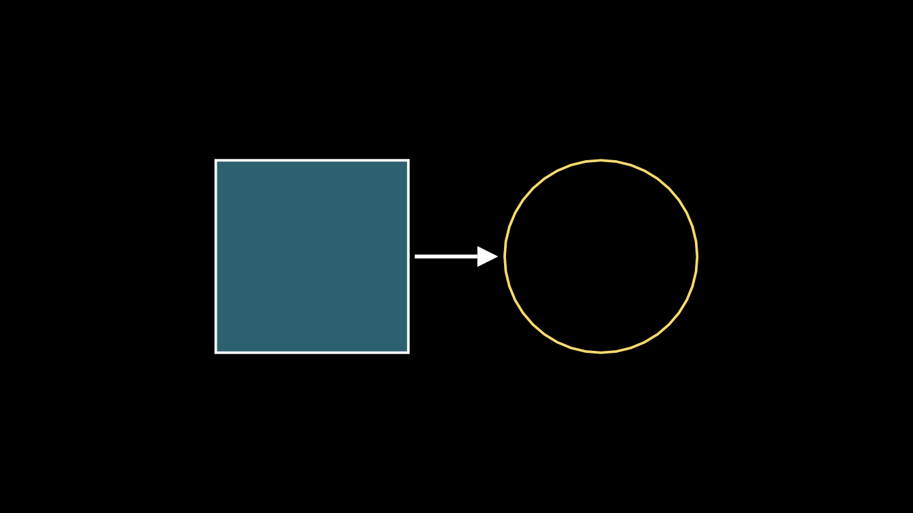
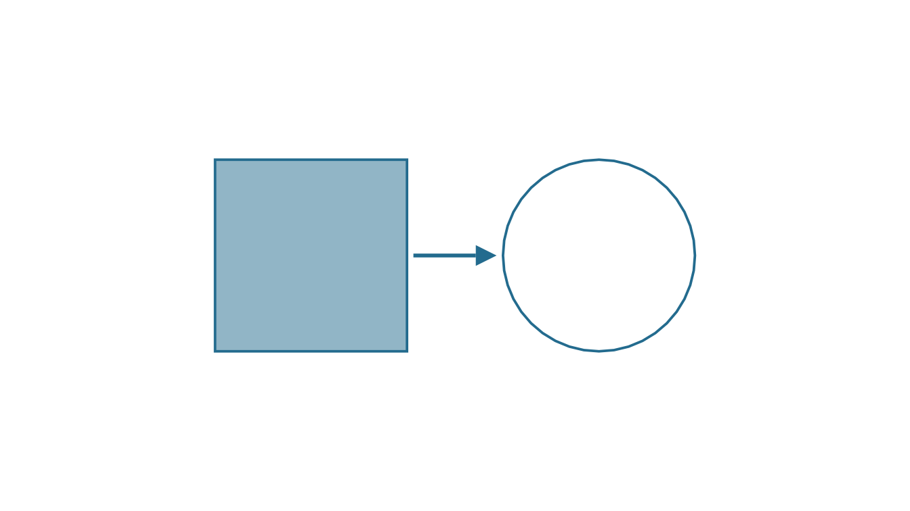
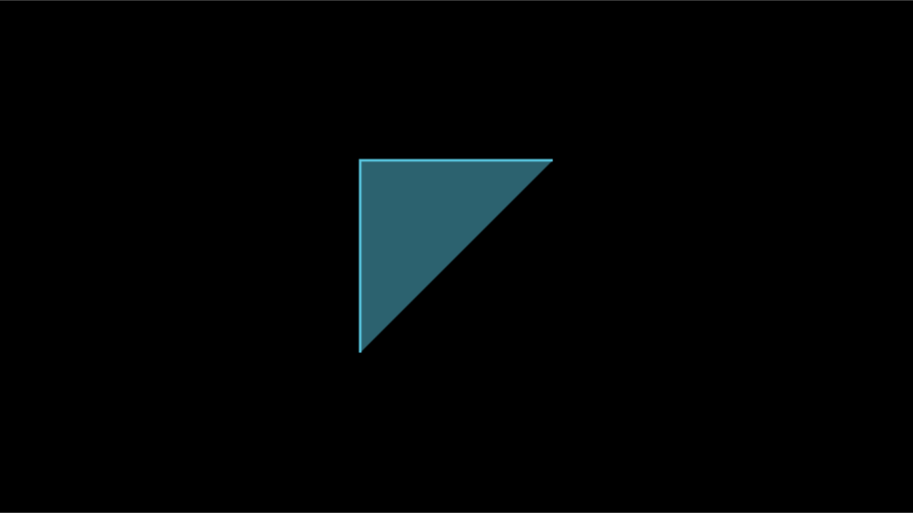
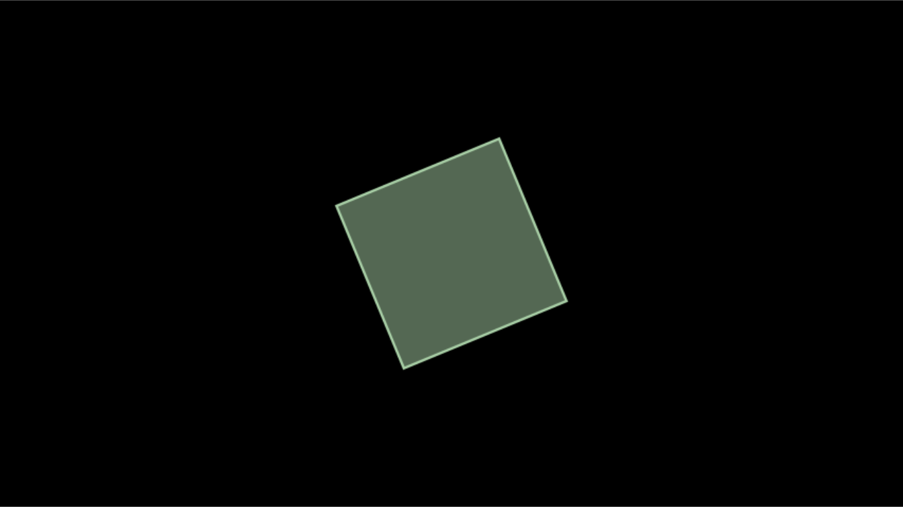
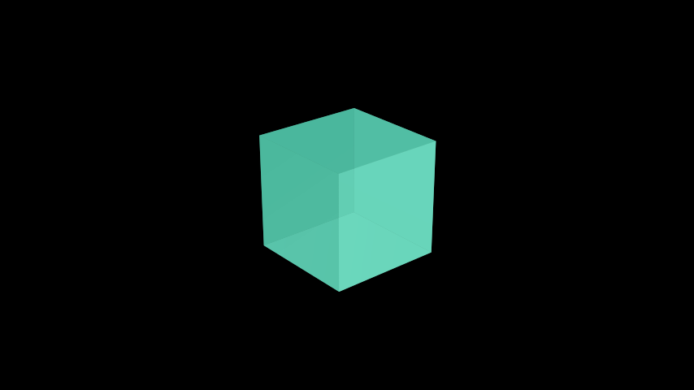
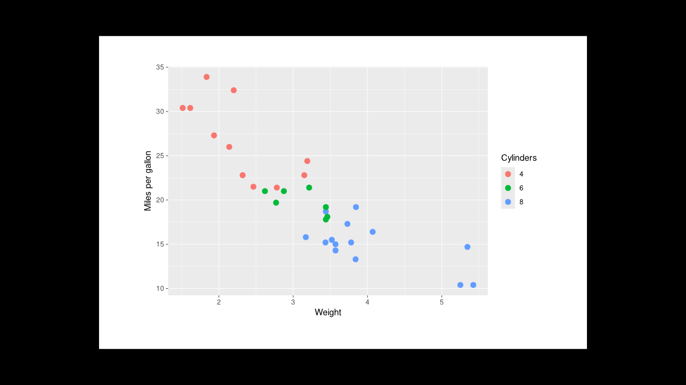

RStudio, knitr, Quarto and Shiny
Source:vignettes/articles/rstudio-knitr-shiny.Rmd
rstudio-knitr-shiny.RmdPython manim is driven from a terminal: you write a file, run
manim -pql scene.py MyScene, and a video player pops up.
manimR keeps that workflow (see Rendering),
but R users usually work inside an IDE, a notebook or a web app. This
vignette shows every place where manimR plugs into that world:
- the RStudio Plots pane and Viewer
(
plot(),scene_frame()andpreview_output()); - the RStudio addins that render the scene under the cursor;
- the
manimknitr engine for R Markdown and Quarto documents; - the interactive Shiny window that lets you orbit, pan and poke a live scene;
- embedding rendered videos in Shiny apps
(
manimOutput()andrenderManim()) and HTML pages; - turning other R graphics (ggplot2, grid, base
graphics) into mobjects with
as_mobject(); - plain scripts run with
Rscript, including themanim_cli()command line, and tests withexpect_snapshot_frame().
The Plots pane: plot()
Every mobject has a plot() method
(plot.Mobject()). It draws one frame, framed exactly like a
scene (8 units high, 14.2 units wide, black background), on the current
graphics device. In RStudio that is the Plots pane, so you can build a
picture step by step at the console, exactly as you would with base
graphics:
square <- Square(side_length = 3)$set_fill(BLUE, opacity = 0.5)
circle <- Circle(radius = 1.5, color = YELLOW)$next_to(square, RIGHT, buff = 1.5)
arrow <- Arrow(square$get_right(), circle$get_left(), buff = 0.1)
shapes <- VGroup(square, arrow, circle)$move_to(ORIGIN)
plot(shapes)
plot() takes a background_color, which
helps when you want a picture for a light themed document:
plot(shapes$copy()$set_color(DARK_BLUE), background_color = WHITE)
Because plot() uses an ordinary R graphics device, it
also works in png(), pdf(),
svg(), knitr figure chunks and Shiny’s
renderPlot(). It draws with the plain 2D camera, so it
ignores 3D camera angles: for a 3D picture, plot a frame of a
ThreeDScene with scene_frame() (next section;
see also Cameras and 3D scenes).
One frame of a scene: scene_frame()
While you work on the timing of a scene you often want to see one
moment of it without rendering a whole video.
scene_frame(scene, t) renders only the frame shown at
t seconds: plays that end before t step
through their frames without drawing them, so updaters reach the state
the video has, the play running at t is drawn at its frame
for that moment, and t = Inf (the default) gives the last
frame. plot() shows the frame in the Plots pane. The scene
can be a scene class or a construct function, and the frame
is drawn by the scene’s own camera, so 3D scenes look as they do in the
video:
grow <- function(self) {
square <- Square(side_length = 3, color = BLUE)$set_fill(BLUE, opacity = 0.5)
self$play(Create(square), run_time = 2)
self$play(square$animate$rotate(PI / 4)$set_color(YELLOW), run_time = 2)
}
plot(scene_frame(grow, t = 1)) # halfway through Create()
plot(scene_frame(grow, t = 3)) # halfway through the rotation
The Viewer: render() and
preview_output()
render() writes a video and returns its path. With
preview = TRUE it also shows the result: in RStudio the
video plays in the Viewer pane; outside RStudio it opens with your
system’s default player.
SquareToCircle <- R6::R6Class("SquareToCircle", inherit = Scene,
public = list(construct = function() {
square <- Square()$rotate(PI / 4)
circle <- Circle()$set_fill(PINK, opacity = 0.5)
self$play(Create(square))
self$play(Transform(square, circle))
self$wait(0.5)
})
)
out <- render(SquareToCircle, quality = "l", preview = TRUE)preview_output() is the function that
preview = TRUE calls. Use it to show any rendered file
again, a video, a GIF or a PNG:
preview_output(out)
preview_output("media/images/manimR/SquareToCircle.png")The Viewer page is a small HTML file in a temporary folder with the video set to loop, so you can leave it playing while you edit.
RStudio addins
manimR registers six addins (see ?rstudio_addins). They
appear in the Addins menu of the RStudio toolbar under
the heading MANIMR:
| Addin name | Function | What it does |
|---|---|---|
| Render scene at cursor | addin_render_scene() |
Renders the scene whose definition contains the cursor (or the nearest one above it) and plays it in the Viewer. |
| Render scene in background | addin_render_background() |
Renders the scene at the cursor as an RStudio background job, so the console stays free while it works. The Background Jobs pane shows its log and can stop it, and the result opens in the Viewer when it is done. |
| Render all scenes in file | addin_render_all() |
Renders every Scene subclass defined in the active file
and shows the last one. |
| Preview last frame | addin_last_frame() |
Renders only the final frame of the scene at the cursor, as a PNG. This is the fastest way to check a layout. |
| Insert scene template | addin_insert_template() |
Inserts a ready to run scene skeleton at the cursor. |
| Render with options | manim_gadget() |
Opens a dialog where you pick the scene, quality, output format, a transparent background and “last frame only”, then renders. |
All six work on the active source document. A saved
file is saved again before rendering, so you never render stale code; an
untitled document is written to a temporary file first. The scenes are
found with find_scenes(), which looks for every R6 class
that inherits from Scene (including
MovingCameraScene, ThreeDScene and your own
scene base classes). Output goes to
media/videos/<file name>/<quality>/ in the
media folder (in the session’s temporary directory unless
media_dir is set), exactly as render_file()
writes it.
The template inserted by addin_insert_template() is the
classic first scene:
MyScene <- R6::R6Class("MyScene", inherit = Scene,
public = list(
construct = function() {
circle <- Circle()$set_fill(PINK, opacity = 0.5)
square <- Square()$rotate(PI / 4)
self$play(Create(square))
self$play(Transform(square, circle))
self$wait()
}
)
)The quick addins render at low quality (480p, 15 frames per second)
so that they return fast. Choose another default with an option, for
example in your ~/.Rprofile:
options(manimR.addin_quality = "m") # "l", "m", "h", "p" or "k"The gadget always asks, and offers the formats "auto",
"mp4", "gif", "webm",
"mov" and "png-sequence" (one PNG per frame);
Last frame only writes a PNG, and a transparent background
turns "mp4" into "mov", which can store
transparency.
Binding a keyboard shortcut
Addins become really useful with a shortcut, so that rendering the scene you are editing is a single key press:
- Open Tools > Modify Keyboard Shortcuts… (or Addins > Browse Addins… > Keyboard Shortcuts…).
- Type
manimRor the addin name, for exampleRender scene at cursor, in the filter box. Addins are listed with the scope Addin. - Click the Shortcut cell of the row and press the key combination you want, for example Ctrl+Alt+M (on macOS Cmd+Option+M).
- Click Apply.
A good set is one key for Preview last frame (layout work) and another for Render scene at cursor (timing work); Render scene in background suits long renders at high quality.
Finding and rendering scenes from code
The addins are thin wrappers around two functions you can call
yourself. find_scenes() lists the scenes defined in a file
(or in an environment):
script <- tempfile(fileext = ".R")
writeLines(c(
'Pulse <- R6::R6Class("Pulse", inherit = Scene, public = list(construct = function() {',
' dot <- Dot(radius = 0.3, color = RED)',
' self$play(GrowFromCenter(dot), run_time = 1)',
' self$play(Indicate(dot), run_time = 1)',
'}))',
'Spin <- R6::R6Class("Spin", inherit = Scene, public = list(construct = function() {',
' self$play(Rotate(Square(), angle = PI / 2), run_time = 1)',
'}))'
), script)
names(find_scenes(script))
#> [1] "Pulse" "Spin"render_file() sources the file and renders the scenes
you name (all of them when you name none). Every argument after the
scene names goes to render(). Here
format = "png" writes only the last frame, into a temporary
media folder:
out <- render_file(script, "Pulse", quality = "l", format = "png", media_dir = tempdir())
#> Rendering Pulse ...
basename(out)
#> [1] "Pulse_manimR_v0.1.0.png"The manim knitr engine
Loading manimR registers a knitr engine called manim
(the function knitr_manim_engine(); if you ever need to
register it by hand, call
knitr::knit_engines$set(manim = manimR::knitr_manim_engine)).
A chunk that uses it contains ordinary R code that defines a scene
class. When the document is knitted the engine
- evaluates the code, in the same environment as the document’s
rchunks, so objects and helper functions defined earlier are visible; - picks the scene to render: the one named by the chunk option
scene, or otherwise the last scene class assigned in this chunk (a chunk that defines no scene renders nothing, so you can also use the engine for plain helper code); - renders it into the document’s figure folder as
<chunk label>-<Scene name>.<extension>; - embeds the result: a looping, muted, autoplaying
<video>element formp4,webmandmovin HTML output, and an ordinary image otherwise.
The code of the chunk is shown, and highlighted, as R code.
Here is a raw chunk as you would type it in an .Rmd
file:
```{manim square-to-circle, quality = "m", out.width = "80%"}
SquareToCircle <- R6::R6Class("SquareToCircle", inherit = Scene,
public = list(construct = function() {
square <- Square()$rotate(PI / 4)
circle <- Circle()$set_fill(PINK, opacity = 0.5)
self$play(Create(square))
self$play(Transform(square, circle))
self$wait(0.5)
})
)
```and this is what knitting it produces:
SquareToCircle <- R6::R6Class("SquareToCircle", inherit = Scene,
public = list(construct = function() {
square <- Square()$rotate(PI / 4)
circle <- Circle()$set_fill(PINK, opacity = 0.5)
self$play(Create(square))
self$play(Transform(square, circle))
self$wait(0.5)
})
)Chunk options
| Option | Default | Meaning |
|---|---|---|
scene |
last scene defined in the chunk | Name of the scene class to render. |
quality |
"l" |
"l" (480p15), "m" (720p30),
"h" (1080p60), "p" (1440p60) or
"k" (2160p60). |
format |
"auto" for HTML, "png" for LaTeX,
"gif" for other outputs |
"auto" (an MP4 video, or the last frame as a PNG when
the scene has no animations), "mp4", "webm",
"mov", "gif", or "png" for the
last frame only. |
save_last_frame |
FALSE |
TRUE is short for format = "png". |
out.width |
"100%" |
Display width of the video or image. |
The usual knitr options keep working: echo = FALSE hides
the code, eval = FALSE shows the code without rendering,
and label names the output file. Set defaults for every
chunk with knitr::opts_chunk$set(), for example
knitr::opts_chunk$set(quality = "m", format = "gif").
When one chunk defines several scenes, scene picks the
one to show. Here two scenes are defined, the second one is rendered,
and it is shown at 60% of the page width:
Shrink <- R6::R6Class("Shrink", inherit = Scene,
public = list(construct = function() {
self$play(ShrinkToCenter(Square()), run_time = 1)
})
)
Grow <- R6::R6Class("Grow", inherit = Scene,
public = list(construct = function() {
star <- Star(color = YELLOW)$scale(2)$set_fill(YELLOW, opacity = 0.6)
self$play(GrowFromCenter(star), run_time = 1)
self$play(Rotate(star, angle = PI / 5), run_time = 1)
})
)With format = "auto" a scene that only adds mobjects,
without animations, is already shown as a picture.
save_last_frame = TRUE gives a still image even when the
scene animates. Either way it is the right choice for a figure that does
not need motion but does need a scene, for example a 3D view:
CubeStill <- R6::R6Class("CubeStill", inherit = ThreeDScene,
public = list(construct = function() {
self$set_camera_orientation(phi = 65 * DEGREES, theta = -40 * DEGREES)
self$add(Cube(side_length = 2.5, fill_color = TEAL))
})
)
Objects defined in ordinary r chunks are available to
the scenes. A helper that builds a mobject can live in an r
chunk and be reused by several scenes:
labeled_dot <- function(text, color) {
VGroup(Dot(radius = 0.4, color = color), Text(text, font_size = 48)$shift(0.9 * DOWN))
}
UseHelper <- R6::R6Class("UseHelper", inherit = Scene,
public = list(construct = function() {
a <- labeled_dot("A", RED)$shift(3 * LEFT)
b <- labeled_dot("B", BLUE)$shift(3 * RIGHT)
self$play(FadeIn(a), FadeIn(b), run_time = 1)
self$play(a$animate$shift(2 * RIGHT), b$animate$shift(2 * LEFT), run_time = 1)
})
)
render() in ordinary r chunks
The engine is not the only way to put a scene in a document. The
value of render() printed in an ordinary r
chunk is embedded too (manimR gives it a knit_print()
method): a video player for MP4, WebM and MOV files in HTML output, an
image for GIF and PNG files, and a note with the path in other output
formats. The file is copied next to the chunk’s figures, and
out.width sets its width. This suits scenes built by code,
for example a construct function made in a loop or read
from a file:
spiral <- function(self) {
curve <- ParametricFunction(function(t) c(t / 4 * cos(t), t / 4 * sin(t), 0),
t_range = c(0, 4 * PI), color = TEAL)
self$play(Create(curve), run_time = 2)
}
spiral_out <- render(spiral, quality = "l", scene_name = "Spiral",
format = if (in_pkgdown) "auto" else "png")
spiral_outrender() returns its path invisibly, so print the value,
as on the last line above. Unlike the engine, render() does
not read the chunk options, so pass quality and
format yourself (this vignette asks for a PNG outside the
website, like its manim chunks).
How these vignettes use the engine
Every manimR vignette starts with the same setup chunk:
knitr::opts_chunk$set(collapse = TRUE, comment = "#>", fig.width = 7, fig.height = 3.94, out.width = "100%")
library(manimR)
manim_config(verbosity = "WARNING", progress_bar = FALSE)
in_pkgdown <- identical(Sys.getenv("IN_PKGDOWN"), "true")
knitr::opts_chunk$set(format = if (in_pkgdown) "auto" else "png", quality = "l")
manim_config(media_dir = file.path(tempdir(), "manimR-media"))
has_latex <- nzchar(Sys.which("latex")) && nzchar(Sys.which("dvisvgm"))
has_typst <- nzchar(Sys.which("typst"))-
library(manimR)registers the engine. -
manim_config(verbosity = "WARNING", progress_bar = FALSE)keeps the render log and progress bars out of the document. - pkgdown sets the environment variable
IN_PKGDOWNwhile it builds the website, so the website gets real videos ("auto"picks MP4). Everywhere else (the installed vignettes,R CMD check) the defaultformatis"png", which embeds the last frame: the HTML stays small and self contained, and the build is faster. -
has_latexandhas_typstare used aseval = has_latexandeval = has_typston chunks that typeset withMathTex()orTypst(), so the vignettes still build on machines without those tools. -
media_dirpoints at a temporary folder, sorender()calls inrchunks and the LaTeX cache ofMathTex()do not write amedia/folder next to the document. (Themanimengine always renders into a temporary folder and copies only the result into the figure folder.)
fig.width = 7 with fig.height = 3.94 gives
the 16:9 aspect ratio of a manim frame, so plot() pictures
and rendered scenes line up on the page.
Quarto
Quarto runs R code through knitr, so the same engine works in
.qmd files. Ask for the knitr engine in the YAML header and
load manimR in a setup chunk before the first manim chunk.
Chunk options can be written in the header or as Quarto’s
#| comments:
---
title: "Animations in Quarto"
format: html
engine: knitr
---
```{r}
#| include: false
library(manimR)
manim_config(verbosity = "WARNING", progress_bar = FALSE)
```
```{manim}
#| label: square-to-circle
#| quality: "m"
#| out.width: "80%"
SquareToCircle <- R6::R6Class("SquareToCircle", inherit = Scene,
public = list(construct = function() {
square <- Square()$rotate(PI / 4)
self$play(Create(square))
self$play(Transform(square, Circle()))
})
)
```The video is written next to the document in the figure folder
(<document>_files/figure-html/), and the page refers
to it, so publish that folder with the HTML file. With
embed-resources: true the videos are embedded into the HTML
file as base64 data, which keeps everything in one file but makes it
large. For small self contained pages, or for PDF output, set
format = "png" (or save_last_frame = TRUE) for
the manim chunks; for PDF output the engine already
defaults to "png". format = "gif" is a middle
ground that moves and is shown as an image.
Interactive scenes in a Shiny window
Python manim’s OpenGL renderer has an interactive mode in which you
can look around a scene while it runs. manimR shows the live scene in a
Shiny gadget instead: in the RStudio Viewer pane, or in your browser
outside RStudio. Open it with interactive_embed();
embed() and interact() are the same function
under upstream’s other names (see ?interactive_scene).
sc <- ThreeDScene$new()
sc$set_camera_orientation(phi = 70 * DEGREES, theta = -45 * DEGREES)
cube <- Cube(fill_color = TEAL)
cube$add_updater(function(m, dt) m$rotate(0.5 * dt, axis = OUT))
sc$add(ThreeDAxes(), cube)
sc$set_key_function("s", function() sc$add(Sphere(radius = 0.5)$shift(2 * UP)))
sc$interactive_embed(fps = 10)In the window:
- time based updaters (such as the spinning cube above) keep running,
fpstimes per second; - dragging with the left mouse button orbits a 3D camera (it changes
thetaandphi); dragging with the right button, or moving the mouse with Shift held, pans the view; - the mouse wheel zooms;
- r restores the starting view and q (or the Close button) closes the window;
- any other key runs the function registered with
scene$set_key_function(key, func); above, s adds a sphere; - the code box runs R code with
selfset to the scene, then redraws, much like upstream’s embedded IPython shell. Tryself$camera$set_zoom(2)orself$add(Text("hello")).
The window needs an interactive R session with the shiny and miniUI
packages installed, and it refuses to open while a video is being
written. scene$check_interactive_embed_is_valid() returns
TRUE when a window can be opened. When the window closes,
interactive_embed() returns the scene, so you can keep
working with the changes you made.
The Shiny app itself is built by the internal function
manimR:::interactive_app(scene, fps), which returns a
shiny::shinyApp() object; it is not exported, so treat it
as subject to change.
Event handlers
The window forwards mouse and keyboard events to methods of the
scene, which you can also call yourself, for example to script a camera
move or to test a key binding. These are the same handlers upstream’s
OpenGL window calls: on_key_press(),
on_key_release(), on_mouse_press(),
on_mouse_motion(), on_mouse_drag() and
on_mouse_scroll().
sc <- ThreeDScene$new()
sc$set_camera_orientation(phi = 60 * DEGREES, theta = -45 * DEGREES)
sc$remember_camera_state() # the view that "r" restores
angles <- function(s) round(c(phi = s$camera$get_phi(), theta = s$camera$get_theta()) / DEGREES)
# A left button drag of (0.5, 0.25) radians orbits the camera.
sc$on_mouse_drag(point = ORIGIN, d_point = c(0.5, 0.25, 0), buttons = 1)
angles(sc)
#> phi theta
#> 74 -74
# Scrolling zooms.
sc$on_mouse_scroll(point = ORIGIN, offset = c(0, 0.2, 0))
round(sc$camera$get_zoom(), 2)
#> [1] 1.66
# "r" goes back to the remembered view.
sc$on_key_press("r")
angles(sc)
#> phi theta
#> 60 -45
# Other keys run the functions registered with set_key_function().
sc$set_key_function("c", function() sc$add(Cube()))
sc$on_key_press("c")
length(sc$mobjects)
#> [1] 1For a 2D Scene (or a MovingCameraScene), a
right button drag pans:
Rendered videos in Shiny apps
manimR has a Shiny output pair, manimOutput() and
renderManim(), that works like plotOutput()
and renderPlot(). The expression in
renderManim() returns a scene class, a
construct function (anything render() takes)
or the path of a file you rendered yourself, and the output shows the
video, or the image for PNG and GIF files. The expression is reactive,
so a scene built from inputs renders again when they change. The
arguments after the expression go to render():
quality = "l" is the default, and
format = "gif" or format = "png" give images.
Renders go to a temporary media folder and reuse its cache of partial
movies, so a setting you have seen before comes back quickly.
library(shiny)
library(manimR)
ui <- fluidPage(
titlePanel("manimR in Shiny"),
sidebarLayout(
sidebarPanel(
sliderInput("n", "Number of sides", min = 3, max = 12, value = 5),
selectInput("color", "Color", c("BLUE", "RED", "GREEN", "YELLOW"))
),
mainPanel(manimOutput("scene", width = "100%"))
)
)
server <- function(input, output, session) {
output$scene <- renderManim({
n <- input$n
color <- get(input$color, envir = asNamespace("manimR"))
function(self) {
shape <- RegularPolygon(n = n)$scale(2)$set_fill(color, opacity = 0.5)
self$play(Create(shape))
self$play(Rotate(shape, angle = PI))
}
}, quality = "l")
}
shinyApp(ui, server)Three other patterns help when you need more control.
Still pictures need no file at all:
plot() draws on Shiny’s plot device.
library(shiny)
library(manimR)
ui <- fluidPage(
sliderInput("n", "Number of sides", min = 3, max = 12, value = 5),
plotOutput("shape", height = "400px")
)
server <- function(input, output, session) {
output$shape <- renderPlot({
plot(RegularPolygon(n = input$n)$scale(2)$set_fill(BLUE, opacity = 0.5))
})
}
shinyApp(ui, server)A time slider is scene_frame() in
renderPlot(): each change of the slider renders a single
frame, which is much faster than a video.
ui <- fluidPage(
sliderInput("t", "Time (seconds)", min = 0, max = 4, value = 0, step = 0.1),
plotOutput("frame", height = "400px")
)
server <- function(input, output, session) {
output$frame <- renderPlot(plot(scene_frame(grow, t = input$t)))
}
shinyApp(ui, server)(grow is the construct function from the
section on scene_frame().)
Videos by hand: render into a folder that Shiny
serves with addResourcePath(), then show the file with a
<video> tag. This version renders only when a button
is pressed. manim_scene() turns a function into a scene
class with a name of your choice. Each render gets a new file name, so
the browser does not show a cached old video.
library(shiny)
library(manimR)
video_dir <- file.path(tempdir(), "manim-videos")
dir.create(video_dir, showWarnings = FALSE)
addResourcePath("videos", video_dir)
ui <- fluidPage(
titlePanel("manimR in Shiny"),
sidebarLayout(
sidebarPanel(
sliderInput("n", "Number of sides", min = 3, max = 12, value = 5),
selectInput("color", "Color", c("BLUE", "RED", "GREEN", "YELLOW")),
actionButton("go", "Render")
),
mainPanel(uiOutput("video"))
)
)
server <- function(input, output, session) {
output$video <- renderUI({
req(input$go)
n <- isolate(input$n)
color <- get(isolate(input$color), envir = asNamespace("manimR"))
scene <- manim_scene(function(self) {
shape <- RegularPolygon(n = n)$scale(2)$set_fill(color, opacity = 0.5)
self$play(Create(shape))
self$play(Rotate(shape, angle = PI))
}, name = "PolygonScene")
file <- file.path(video_dir, sprintf("polygon-%d.mp4", input$go))
withProgress(message = "Rendering", {
render(scene, quality = "l", output_file = file, media_dir = tempdir())
})
tags$video(src = file.path("videos", basename(file)), type = "video/mp4",
controls = NA, autoplay = NA, loop = NA, muted = NA, width = "100%")
})
}
shinyApp(ui, server)The last frame as an image sits in between: render
with format = "png" and return the PNG from
renderImage():
output$frame <- renderImage({
png <- render(scene, quality = "m", format = "png", media_dir = tempdir())
list(src = unclass(png), contentType = "image/png", width = "100%")
}, deleteFile = FALSE)Rendering takes a few seconds even at low quality, so for scenes that
do not depend on the inputs render once (at startup, or ahead of time
into the app’s www/ folder) and only serve the files.
Rendered videos in R Markdown HTML pages
Inside an R Markdown document the manim engine is the
simplest way: the video is rendered while knitting. To show a video you
rendered earlier, put a <video> element in the page.
In an r chunk an htmltools tag is printed as HTML:
htmltools::tags$video(src = "media/videos/scenes/720p30/SquareToCircle.mp4", type = "video/mp4",
controls = NA, autoplay = NA, loop = NA, muted = NA, width = "100%")or write the HTML directly in the text of the document:
<video src="media/videos/scenes/720p30/SquareToCircle.mp4" controls autoplay loop muted width="100%"></video>GIFs and PNGs are images, so knitr::include_graphics()
handles them, and they are embedded in self contained HTML files:
knitr::include_graphics("media/videos/scenes/480p15/SquareToCircle.gif")When the output is self contained (the default of
html_document and html_vignette), pandoc
embeds the video into the HTML file as base64 data, so the page works on
its own but grows by the size of every video. With
self_contained = FALSE the page links to the file instead,
so keep the video next to the HTML file when you share the page.
Other R graphics: as_mobject()
as_mobject() brings plots made with other R graphics
into a scene. It draws the plot into an SVG file with R’s
svg() device and imports it with SVGMobject(),
so every line, point, rectangle and letter becomes a submobject that can
be colored, moved and animated. It takes
- a ggplot2 plot, a grid grob or gtable, or a recorded plot
(
recordPlot()), drawn as they are; - a function that draws with base graphics, such as
function() hist(x).
width and height set the size of the
drawing in inches, bg its background (transparent by
default, so only the plot’s own elements are imported), and
height_units the height of the mobject in scene units (6 by
default). A white background suits a ggplot with its default theme:
p <- ggplot2::ggplot(mtcars, ggplot2::aes(wt, mpg, color = factor(cyl))) +
ggplot2::geom_point(size = 3) +
ggplot2::labs(x = "Weight", y = "Miles per gallon", color = "Cylinders")
chart <- as_mobject(p, width = 7, height = 4.5, bg = "white", height_units = 6.5)
plot(chart)
Base graphics drawn in white on the transparent background look at
home on manim’s black frame, and Create() draws them stroke
by stroke:
Histogram <- R6::R6Class("Histogram", inherit = Scene,
public = list(construct = function() {
hist_mob <- as_mobject(function() {
par(fg = "white", col.axis = "white", col.lab = "white", col.main = "white")
hist(faithful$eruptions, breaks = 20, col = "steelblue", border = "white",
main = "Old Faithful eruptions", xlab = "Minutes")
}, height_units = 6.5)
self$play(Create(hist_mob), run_time = 2)
})
)Scripts, Rscript and manim_cli()
For batch work, keep scenes in an ordinary R script. A script can render its own scenes at the end:
# scenes.R
library(manimR)
SquareToCircle <- R6::R6Class("SquareToCircle", inherit = Scene,
public = list(construct = function() {
self$play(Create(Square()))
self$play(Transform(self$mobjects[[1]], Circle()))
})
)
if (sys.nframe() == 0L) { # only when run as a script, not when sourced
render(SquareToCircle, quality = "h")
}and is run from a terminal with
render_file() and the RStudio addins source such a
script, and the sys.nframe() test keeps the render call at
the bottom from running then.
manim_cli() mirrors the manim command of
Python manim, so existing habits and shell scripts carry over. It reads
its arguments from the command line:
Rscript -e 'manimR::manim_cli()' scenes.R SquareToCircle -pql
Rscript -e 'manimR::manim_cli()' render scenes.R -a -qh --format=gif
Rscript -e 'manimR::manim_cli()' scenes.R SquareToCircle -s -r 1920,1080FILE is an R script followed by scene names. Without
scene names a script with one scene renders it, and a script with
several asks which to render. As in manim, render may come
first and options can be written --name=value.
| Flag | Meaning |
|---|---|
-ql, -qm, -qh,
-qp, -qk
|
Quality: 480p15, 720p30, 1080p60, 1440p60, 2160p60.
-q NAME also accepts preset names such as
low_quality. |
-p |
Preview the result when done. |
-s |
Save only the last frame, as a PNG (--format png). |
-t |
Transparent background (MOV output). |
-a |
Render every scene in the file. |
--format FMT |
auto, mp4, mov,
webm, gif, png,
png-sequence or none. |
-o FILE |
Output file. |
-c FILE |
Read settings from a .cfg file. |
--media_dir DIR |
Where the media folder goes. |
-n N or -n N,M
|
Render only animation N, or animations N through M, counted from 0. |
-r W,H |
Resolution in pixels. |
--fps FPS |
Frame rate. |
--save_sections |
Also write one video per section. |
--disable_caching |
Render every animation again instead of reusing cached partial movies. |
--flush_cache |
Delete the cached partial movie files first. |
Short flags can be combined as in manim: -pql is
-p -ql. The other options of manim render
(--seed, --dry_run, -v,
--video-codec and more) are accepted too;
?manim_cli lists them all. Called with no arguments (or
with -h), manim_cli() prints its usage
line.
Settings can live in a manim.cfg file, upstream’s
format: a [CLI] section with lines such as
quality = low_quality or
background_color = WHITE. As import manim
does, manimR reads the manim.cfg of the working directory
(and the user wide ~/.config/manim/manim.cfg) when it
loads; manim_cli() reads the working directory’s file too,
-c names another one, and options on the command line win
over both. digest_config_file() applies such a file in an R
session.
The other subcommands of manim work as well:
Rscript -e 'manimR::manim_cli()' --version
Rscript -e 'manimR::manim_cli()' checkhealth # are FFmpeg, LaTeX and friends installed?
Rscript -e 'manimR::manim_cli()' cfg show # print the settings
Rscript -e 'manimR::manim_cli()' cfg write # write them to ./manim.cfg
Rscript -e 'manimR::manim_cli()' cfg export --dir DIR
Rscript -e 'manimR::manim_cli()' init project MyVideo # a folder with main.R and manim.cfg
Rscript -e 'manimR::manim_cli()' init scene Intro main.R
Rscript -e 'manimR::manim_cli()' plugins -l
Rscript -e 'manimR::manim_cli()' cache clear scenes.R SquareToCircle -q lmanim_cli() also takes the arguments as a character
vector, which is handy for testing a command line from R. Here the last
frame of the Spin scene from the script written earlier is
rendered into a temporary media folder:
out <- manim_cli(c(script, "Spin", "-ql", "-s", paste0("--media_dir=", tempdir())))
#> Rendering Spin ...
basename(out)
#> [1] "Spin_manimR_v0.1.0.png"
manim_cli("--version")
#> manimR v0.1.0On a server without a display, everything above works unchanged: manimR draws with the ragg graphics device and writes videos with FFmpeg, so no window system is needed.
Testing scenes: expect_snapshot_frame()
A package that builds animations on manimR can test them like plots.
expect_snapshot_frame(scene, t, name) is a testthat
expectation: it renders the frame at time t with
scene_frame(), saves it as a PNG snapshot (see
testthat::expect_snapshot_file()), and fails when a later
run draws a different picture. Inspect and accept changes with
testthat::snapshot_review() as for any snapshot.
# tests/testthat/test-scenes.R
test_that("the title card stays the same", {
expect_snapshot_frame(TitleCard, t = 1.5, name = "title-card")
expect_snapshot_frame(TitleCard, name = "title-card-end") # the last frame
})